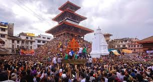
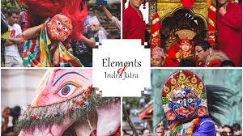
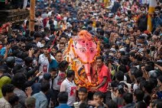

Indra Jatra Festival



Indra Jatra, also known as Yenya Punhi, is a vibrant eight-day festival celebrated in Kathmandu, Nepal,
honoring Lord Indra, the god of rain, and Kumari, the living goddess. It's a significant Newar festival, deeply
rooted in both Hindu and Buddhist traditions, marking the end of the monsoon season and the beginning of autumn.
The festival is filled with chariot processions, masked dances, and various rituals, showcasing the rich
cultural heritage of the Kathmandu Valley.
Celebration: Indra Jatra is celebrated in the Nepali month of Bhadra (August/September).
Key Figures:
- Lord Indra: Honored for sending rain for a bountiful harvest.
- Kumari: The living goddess who is paraded through the streets in a chariot.
Festivities:
- Chariot Processions: Kumari, Ganesh, and Bhairav chariots are paraded.
- Masked Dances: Including Pulu Kisi (an elephant) and Lakhey.
- Religious Rituals: Worship of Indra and remembrance of the deceased.
Significance: It acknowledges the importance of rain for agriculture and honors the departed.
Location: Especially around Hanuman Dhoka Durbar Square in Kathmandu.
Mythology: Legend says Indra was captured while searching for a flower. His mother rescued him
and promised rain and peace for the people of Kathmandu.